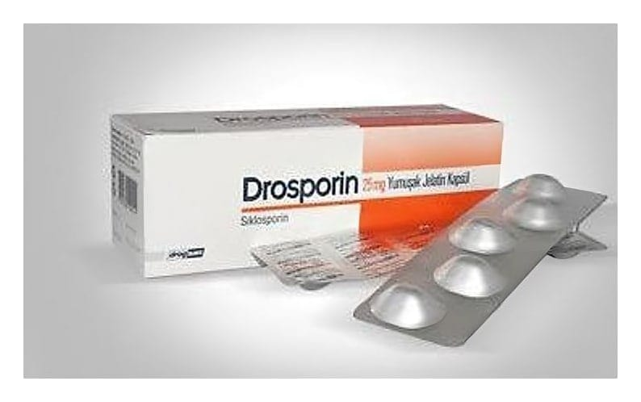

Drosporin 25 mg Yumuşak Jelatin Kapsül, 50 Adet

Ne için kullanılır
KT · Bölüm 1DROSPORİN 25 mg Yumuşak Jelatin Kapsüllerin her biri 25 mg siklosporin içerir.
DROSPORİN, 50 adet yumuşak jelatin kapsül içeren blister ambalajlarda takdim edilmektedir.
Eğer size bir transplantasyon (organ nakli) uygulanmışsa, DROSPORİN’in fonksiyonu vücudunuzun bağışıklık (immün) sistemini kontrol etmektir. DROSPORİN, normal olarak nakledilmiş dokulara saldıracak olan özel hücrelerin gelişimini bloke ederek, nakledilen organın reddedilmesini önler.
Eğer kendi vücudunuzun immün yanıtının (bağışıklık) vücudunuzdaki hücrelere saldırdığı bir hastalığınız (otoimmün hastalık) varsa, DROSPORİN bu hastalıktaki bağışıklık sistemi tepkilerini (immünoreaksiyonları) bastırır. Bu tür otoimmün hastalıklar; görmeyi tehdit eden bir çeşit göz iltihabı olan konjonktivit (orta veya ilerlemiş üveit ya da Behçet üveiti), belirli deri hastalıklarının ağır vakaları (atopik dermatit/egzama ve sedef), metotreksat gibi hastalık modifiye ilaçların etkisiz olduğu şiddetli, aktif romatoid artrit (eklemlerde ağrı ve şekil bozukluğuna neden olan devamlı bir hastalık) ve nefrotik sendrom adı verilen bir böbrek hastalığıdır.